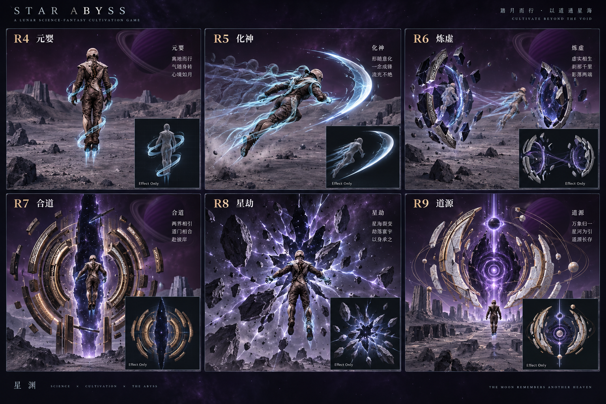

常规 / 加速上限米/秒 · 高于地表 350 米
短 / 长距瞬移米 · 炼虚开始解锁
G 起飞 / 上升，C 下降；Shift + WASD 加速。Y 短距虚步，Shift + Y 预览长距虚步；R 发动当前境界空战招式。
本页展示游戏实际使用的模型。游戏中的气流、气刃与裂隙有透明淡入淡出；此处保留实体外观便于检查造型。
概念先行，再制作可旋转查看的实体网格。拖拽旋转，滚轮缩放。
常规 / 加速上限米/秒 · 高于地表 350 米
短 / 长距瞬移米 · 炼虚开始解锁
G 起飞 / 上升，C 下降；Shift + WASD 加速。Y 短距虚步，Shift + Y 预览长距虚步；R 发动当前境界空战招式。
本页展示游戏实际使用的模型。游戏中的气流、气刃与裂隙有透明淡入淡出；此处保留实体外观便于检查造型。
| 境界 | 常规 / 加速 m/s | 短 / 长虚步 m | 空间与空战定位 |
|---|
近地限速与当前星球离地 2,000 米上限继续生效。虚步不能穿墙或进入未加载地形，失败不扣灵息。空战及破虚目前接入原六公里盆地；“破虚”是局部空间攻击，不代表已完成跨星或永久地形破坏。正式成长链尚未开放全部高阶突破，各高阶测试档互相隔离。
